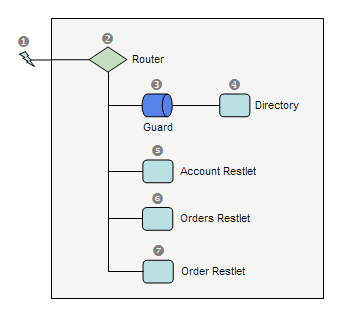

Rewriting, redirection, router & hierarchical URIs
URI rewriting and redirection
Another advantage of the Restlet framework is the built-in support for cool URIs. A good description of the importance of proper URI design is given by Jacob Nielsen in his AlertBox.
The first tool available is the Redirector, which allows the rewriting of a cool URI to another URI, followed by an automatic redirection. Several types of redirection are supported, the external redirection via the client/browser and the connector redirection for proxy-like behavior. In the example below, we will define a search service for our web site (named “mysite.org”) based on Google. The “/search” relative URI identifies the search service, accepting some keywords via the “kwd” parameter:
// Create a root router
Router router = new Router(getContext());
// Create a Redirector to Google search service
String target = "http://www.google.com/search?q=site:mysite.org+{keywords}";
Redirector redirector = new Redirector(getContext(), target,
Redirector.MODE_CLIENT_TEMPORARY);
// While routing requests to the redirector, extract the "kwd" query
// parameter. For instance :
// http://localhost:8182/search?kwd=myKeyword1+myKeyword2
// will be routed to
// http://www.google.com/search?q=site:mysite.org+myKeyword1%20myKeyword2
Extractor extractor = new Extractor(getContext(), redirector);
extractor.extractQuery("keywords", "kwd", true);
// Attach the extractor to the router
router.attach("/search", extractor);Note that the Redirector needs three parameters only. The first is the parent context, the second one defines how the URI rewriting should be done, based on a URI template. This template will be processed by the Template class. The third parameter defines the type of redirection; here we chose the client redirection, for simplicity purpose.
Also, we are relying on the Route class to extract the query parameter “kwd” from the initial request while the call is routed to the application. If the parameter is found, it is copied into the request attribute named “keywords”, ready to be used by the Redirector when formatting its target URIs.
Routers and hierarchical URIs
In addition to the Redirector, we have another tool to manage cool URIs: Routers. They are specialized Restlets that can have other Restlets (Finders and Filters for example) attached to them and that can automatically delegate calls based on a URI template. In general, you will set a Router as the root of your Application.
Here we want to explain how to handle the following URI patterns:
- /docs/ to display static files
- /users/{user} to display a user account
- /users/{user}/orders to display the orders of a particular user
- /users/{user}/orders/{order} to display a specific order
The fact that these URIs contain variable parts (between accolades) and that no file extension is used makes it harder to handle them in a typical Web container. Here, you just need to attach target Restlets to a Router using the URI template. At runtime, the route that best matches the request URI will received the call and be able to invoke its attached Restlet. At the same time, the request’s attributes map will be automatically updated with the value of the URI template variables!

See the implementation code below. In a real application, you will probably want to create separate subclasses instead of the anonymous ones we use here:
// Create a root router
Router router = new Router(getContext());
// Attach a guard to secure access to the directory
Guard guard = new Guard(getContext(), ChallengeScheme.HTTP_BASIC,
"Restlet tutorial");
guard.getSecrets().put("scott", "tiger".toCharArray());
router.attach("/docs/", guard);
// Create a directory able to expose a hierarchy of files
Directory directory = new Directory(getContext(), ROOT_URI);
guard.setNext(directory);
// Create the account handler
Restlet account = new Restlet() {
@Override
public void handle(Request request, Response response) {
// Print the requested URI path
String message = "Account of user \""
+ request.getAttributes().get("user") + "\"";
response.setEntity(message, MediaType.TEXT_PLAIN);
}
};
// Create the orders handler
Restlet orders = new Restlet(getContext()) {
@Override
public void handle(Request request, Response response) {
// Print the user name of the requested orders
String message = "Orders of user \""
+ request.getAttributes().get("user") + "\"";
response.setEntity(message, MediaType.TEXT_PLAIN);
}
};
// Create the order handler
Restlet order = new Restlet(getContext()) {
@Override
public void handle(Request request, Response response) {
// Print the user name of the requested orders
String message = "Order \""
+ request.getAttributes().get("order")
+ "\" for user \""
+ request.getAttributes().get("user") + "\"";
response.setEntity(message, MediaType.TEXT_PLAIN);
}
};
// Attach the handlers to the root router
router.attach("/users/{user}", account);
router.attach("/users/{user}/orders", orders);
router.attach("/users/{user}/orders/{order}", order);Note that the routing assumes that your request contains an absolute target URI that identifies a target resource. During the request processing the resource’s base URI is continuously updated, for each level in the hierarchy of routers. This explains why the default behavior of routers is to match only the beginning of the remaining URI part and not the totality of it. In some cases, you might want to change this default mode, and this is easy to do via the “defaultMatchingMode” property on Router, or by modifying the “matchingMode” property of the template associated with the route created by the Router.attach() methods. For the modes, you can use the Template.MODE_EQUALS or Template.MODE_STARTS_WITH constants.
Please note that the values of the variables are directly extracted from the URI and are therefore not percent-decoded. In order to achieve such a task, have a look to the Reference#decode(String) method.